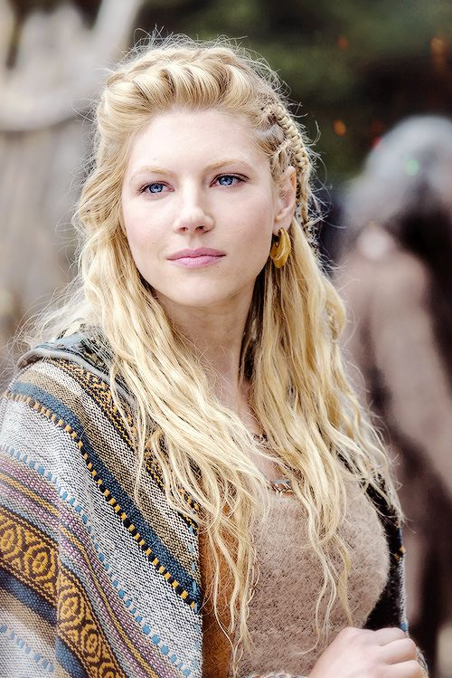

Projeto 1

Um projeto da aula de Modelagem e Simulação que consistia em construir um modelo que descrevesse a vida de raias, vieiras e tubarões.
Um projeto da aula de Modelagem e Simulação que consistia em construir um modelo que descrevesse a vida de raias, vieiras e tubarões.